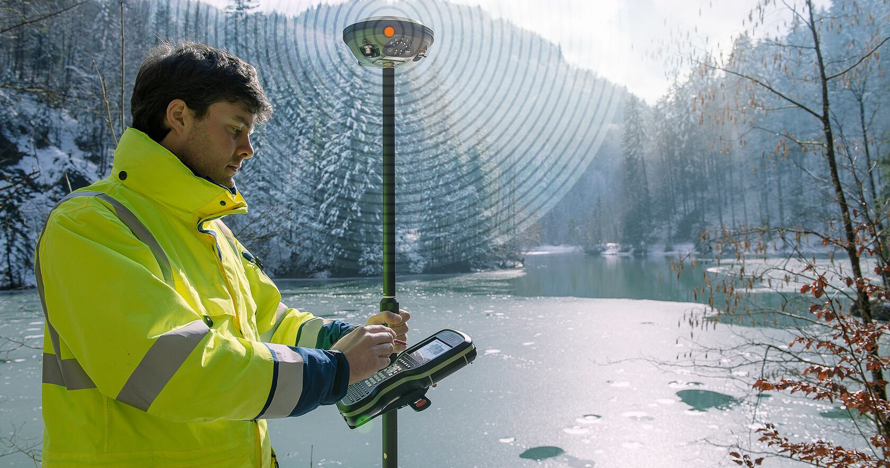

Why Choose Geo Lanka Survey Solutions
Licensed Professionals
Our team consists of government licensed surveyors with years of field experience in Sri Lanka's diverse terrain and regulatory environment.
Modern Equipment
We use the latest Total Stations, GPS units, and Drones for pinpoint accuracy, ensuring reliable results in challenging conditions.
Fast Turnaround
Get your survey plans and reports delivered quickly without compromising quality, helping you meet project deadlines.
Local Expertise
With deep knowledge of Sri Lankan geography, laws, and customs, we provide culturally sensitive and legally compliant surveying services.
Comprehensive Solutions
From initial consultation to final deliverables, we offer end-to-end surveying solutions that cover all your geospatial needs.
Choose Geo Lanka Survey Solutions for reliable, accurate, and professional surveying services that drive your projects forward with confidence.